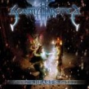

|
|
||
Sonata Arctica : Winterheart's Guild (2003) |
|

http://www.sonataarctica.com |
1. Abandoned, Pleased, Brainwashed, Exploited 5:37 |
8.2/10 |
|
El tercer disco de la banda filandesa Sonata Arctica mantiene la evolución seguida en los dos anteriores, y afianza su posición entre los mejores grupos de power metal progresivo. Sin la tensión y fuerza que caracterizaban al primer álbum, el fantástico Ecliptica, especialmente en la voz de Tony Kakko, pero más interesante que el anterior, Silence, donde ya se había hecho patente una gran mejora técnica, este Winterheart's Guild es sin duda un buen trabajo. La primera canción, "Abandoned, Pleased, Brainwashed, Exploited", es un gran comienzo de disco, a doble bombo, con cambios patentes de ritmo, coros, clara presencia de teclados y la voz de Tony Kakko en esos tonos altos y cristalinos que alcanza. "Graveinmage" es principalmente una balada, pero con secciones donde se acelera bastante, aunque sin perder melodía, gracias de nuevo a teclados y coros. El tercer corte, "The Cage", recupera el doble bombo y consigue transmitir una vertiginosa sensación de subida que culmina en el fantástico estribillo y en los solos de guitarra y teclado (tocado en este y algunos otros temas por Jens Johansson, de Stratovarius). "Silver Tongue" es una canción un poco más oscura, de ritmo marcado y con algunas partes a coro muy interesantes. El siguiente tema, "The Misery", es una balada, sentida y de estribillo estremecedor, donde las guitarras eléctricas y los teclados se combinan para construir una base rítmica suave, pero de indiscutible metal. "Victoria's Secret" es un tema de tempo moderado, con una parte instrumental neoclásica bien ejecutada, tanto a la guitarra como a los teclados (de nuevo por Jens Johansson). "Champagne Bath", que comienza con una pequeña intro neoclásica, que recuerda mucho al estilo de Yngwie Malmsteen, es una canción frenética, con otro original solo en el que los teclados otra vez son ejecutados por Jens Johansson. La pista ocho, "Broken" es una canción lenta y pulsante con algunas secciones bastante diferenciadas. "The Ruins of my Life" recupera el vertiginoso doble bombo y los estribillos cantados al límite, en el mejor estilo de este grupo, incluyendo cambios de ritmo y un final realmente escalofriante. El disco termina con "Draw Me", una balada que no destaca especialmente. En mi humilde opinión, las bandas deberían tratar de mantenerse siempre en el límite de sus posibilidades. Es en este límite donde ocurren las cosas más interesantes, y donde creo que Sonata Arctica estaba cuando grabaron su primer álbum, Eclíptica. Aunque parezca contradictorio, el mejorar técnicamente creo que les ha llevado a que sus otros dos álbumes sean peores, porque ahora alcanzan sus objetivos con mayor comodidad, y esto se transmite en las canciones, que pierden tensión y rabia a cambio de sonar más "perfectas". La sensación de que un guitarrista no podría tocar ni una nota más, o de que la voz no podría subir ni un semitono es inimitable y pocas bandas consiguen transmitir eso fuera del escenario, y muchas ni ahí. En cualquier caso, este disco de Sonata Arctica es un buen trabajo y merece un lugar entre los grandes discos del power metal progresivo. |
||
Rubén Béjar |
||